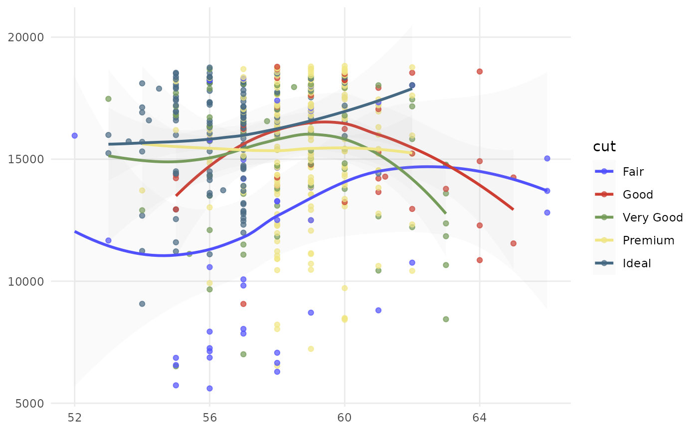
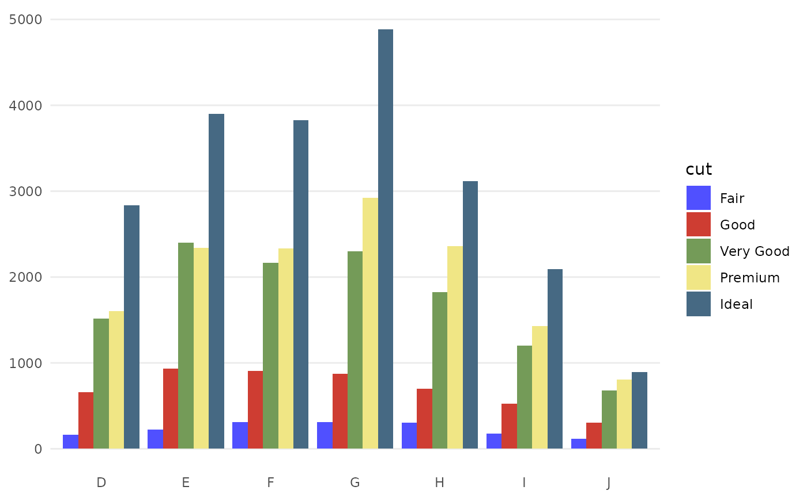
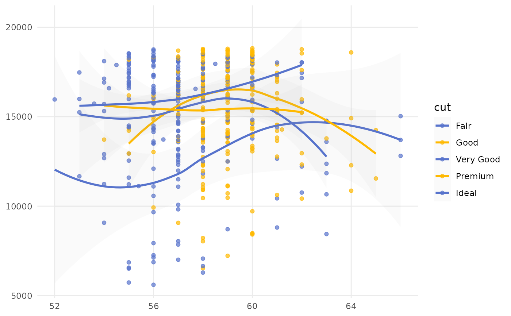
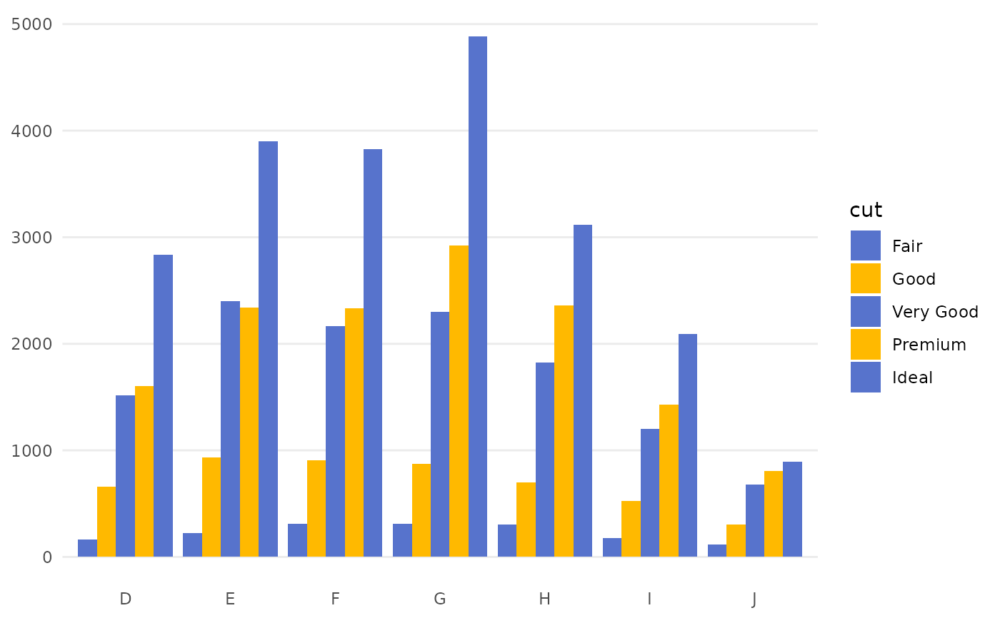

See pal_igv() for details.
Arguments
- palette
Palette type. There are two available options:
"default"(51-color palette)."alternating"(2-color palette).
- alpha
Transparency level, a real number in (0, 1]. See
alphaingrDevices::rgb()for details.- ...
Additional parameters for
ggplot2::discrete_scale().
Author
Nan Xiao | me@nanx.me | https://nanx.me
Examples
library("ggplot2")
data("diamonds")
p1 <- ggplot(
subset(diamonds, carat >= 2.2),
aes(x = table, y = price, colour = cut)
) +
geom_point(alpha = 0.7) +
geom_smooth(method = "loess", alpha = 0.1, size = 1, span = 1) +
theme_bw()
p2 <- ggplot(
subset(diamonds, carat > 2.2 & depth > 55 & depth < 70),
aes(x = depth, fill = cut)
) +
geom_histogram(colour = "black", binwidth = 1, position = "dodge") +
theme_bw()
p1 + scale_color_igv()
#> `geom_smooth()` using formula = 'y ~ x'

p2 + scale_fill_igv()

p1 + scale_colour_manual(
values = rep(pal_igv("alternating")(2), times = 3)
)
#> `geom_smooth()` using formula = 'y ~ x'

p2 + scale_fill_manual(
values = rep(pal_igv("alternating")(2), times = 3)
)
